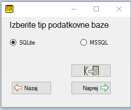

Pomoč programa Tangenta na svetovnem spletu
Navodila za izbiro vrste podatkovne baze

V kolikor nameravate izdajati račune vedno na samo enem in istem računalniku je dovolj, da izberete SQLite podatkovno bazo. SQLite strežnik je vkomponiran v programu Tangenta.
SQLite podatkovna baza je datoteka katere lokacijo shrambe in ime boste določili v naslednjem dialogu ki se prikaže potem ko pritisnete gumb
V kolikor nameravate izdajati račune na več kot enem računalniku (na primer na več blagajnah) potem je smiselno, da izberete MSSQL podatkovno bazo. V kolikor izberete MSSQL podatkovno bazo, se morate povezati na nek MSSQL strežnik "Microsoft SQL Server". MSSQL
strežnik verzija express je brezplačna in jo lahko naložite dol na naslovu: https://www.microsoft.com/en-us/download/details.aspx?id=29062